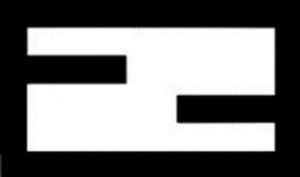

Trade Mark Journal No.2025/046 14 November 2025
WO0000001883447 (3,9,14,18,20,21,24,25,35,43)
Office of origin: Italy
Date of International Registration:22 May 2025
Date of designation in the UK:
22 May 2025

- Class 3
- Perfumery; perfumes; eau de parfum; eaux de toilette; eau de Cologne; perfumes in solid form; cosmetics, namely, cosmetic creams, cosmetic milks, cosmetic lotions, cosmetic foams, cosmetic gels for the face and the body; non-medicated bath preparations, namely, bath salts and bath oils, shower gel; deodorants for personal use; pre-shave and after-shave creams and lotions; make-up, mascara, eye shadows, pencils for cosmetic purposes, cosmetic powders, skin foundation, blushes, nail varnish, lipsticks.
- Class 9
- Scientific, research, navigation, surveying, photographic, cinematographic, audiovisual, optical, weighing, measuring, signalling, detecting, testing, inspecting, life-saving and teaching apparatus and instruments; apparatus and instruments for conducting, switching, transforming, accumulating, regulating or controlling the distribution or use of electricity; apparatus and instruments for recording, transmitting, reproducing or processing sound, images or data; recorded and downloadable media, computer software, blank digital or analogue recording and storage media; mechanisms for coin-operated apparatus; cash registers, calculating devices; computers and computer peripheral devices; diving suits, divers' masks, ear plugs for divers, nose clips for divers and swimmers, gloves for divers, breathing apparatus for underwater swimming; fire-extinguishing apparatus; sunglasses; eyewear; contact lens cases; eyewear cases; spectacle frames; sports glasses; mouse pads; earphones; sports helmets; helmets for motorcyclists; headphones; bags, cases and sleeves for holding or carrying telephone and mobile phones, computers, laptop computers, MP3 players, personal digital assistants and tablets; audio speakers; cameras; magnetic data carriers, recording discs; apparatus for recording, transmission or reproduction of sound or images; downloadable virtual products, namely, software featuring footwear, clothing, belts, headgear, glasses, sunglasses, sports goggles, bags, handbags, sports bags, backpacks, mobile phone and tablet covers, bags adapted for tablets and computers, perfumes, watches and jewellery, also for use online and in online virtual worlds; downloadable computer software for interactive games for use via a global computer network and through various wireless networks and electronic devices; downloadable software for engaging in social networking and interacting with online communities; downloadable software for accessing and streaming multimedia entertainment content; downloadable software for providing access to an online virtual environment; downloadable software for creating, producing and modifying animated and non-animated digital characters and cartoons, digital avatars, overlays and skins for access and use in online environments, online virtual environments and extended virtual reality environments; near field communication tokens; downloadable mobile applications for ordering products, featuring footwear, clothing, belts, headgear, glasses, sunglasses, sports goggles, bags, handbags, sports bags, backpacks, mobile phone and tablet covers, bags adapted for tablets and computers, perfumes, watches and jewellery for use online and in online virtual worlds; downloadable digital files authenticated by non-fungible tokens [NFTs] or by other digital tokens using blockchain technology; downloadable digital artwork and images; downloadable multimedia files containing artwork, text, audio, and/or video featuring footwear, clothing, belts, headgear, glasses, sunglasses, sports goggles, bags, handbags, sports bags, backpacks, mobile phone and tablet covers, bags adapted for tablets and computers, perfumes, watches and jewellery, all authenticated by non-fungible tokens (NFTs); near field communication tags for interacting with mobile applications to obtain information in relation to footwear, clothing, belts, headgear, glasses, sunglasses, sports goggles, bags, handbags, sports bags, backpacks, mobile phone and tablet covers, bags adapted for tablets and computers, perfumes, watches and jewellery.
- Class 14
- Jewellery, precious stones; rings [jewellery]; key rings; buckles in precious metals; earrings; cuff-links; bracelets; bangles; jewellery charms; pins [jewellery]; necklaces [jewellery]; chain bracelets; tie pins; horological and chronometric instruments, namely watch bracelets, wristwatches, pocket watches, clocks; watch chains; watch cases [parts of watches]; chronographs for use as timepieces and chronometric watches; alarm clocks; cases for horological articles; key rings (trinket or short chain charm); hairclips in precious metals [jewellery]; brooches.
- Class 18
- Leather and imitations of leather; animal skins; bags; handbags; boston bags; shoulder bags; clutch bags; waist packs; beach bags; bags for sports; duffle bags; net bags for shopping; sling bags for carrying infants; back frames for carrying children; backpacks; rucksacks; school satchels; wallets; purses; card cases [notecases]; pouches of leather; pouches; chain mesh purses; clothing for pets; collars for animals; game bags [hunting accessories]; handbag frames; key cases [leather goods]; envelopes, of leather, for packaging; briefcases; attaché cases; suitcases; wheeled bags; carrying bags; trunks; travelling bags; garment bags for travel; multi-purpose bags; bags, of leather, for packaging; travel clothing covers; vanity cases sold empty; waterproof protective covers specifically adapted for backpacks; umbrellas; parasols; walking sticks; whips and harness for animals; saddlery; haversacks; horse blankets; music cases; dog waste bag dispensers made of leather adapted for use with leashes.
- Class 20
- Furniture; bathroom furniture; kitchen furniture; household furniture; umbrella stands; coat stands; sofas; divans; stands [furniture] for use with television; serving trolleys; bookshelves; furniture parts, namely, countertops and shelves, non-metal furniture legs, feet for furniture, wheels for furniture, furniture handles and knobs; mirrors; picture frames; trophies made of wood, cork, reed, cane, wicker, horn, bone, ivory, whalebone, shell, amber, mother-of-pearl, meerschaum or of plastic; figurines of bone, ivory, plaster, plastic, wax or wood; sculptures of bone, ivory, plaster, plastic, wax or wood; air cushions, not for medical purposes; air mattresses, not for medical purposes; air pillows, not for medical purposes; bead curtains for decoration; bedding, except linen; busts of wood, wax, plaster or plastic; covers for clothing [wardrobe]; curtain holders, not of textile material; curtain tie-backs; cushions; doors for furniture; fire screens, domestic; garment covers [storage]; house numbers, not of metal, non-luminous; indoor window blinds [shades] [furniture]; infant walkers; mannequins; mobiles [decoration]; pet cushions; slatted indoor blinds; statues of wood, wax, plaster or plastic; statuettes of wood, wax, plaster or plastic; table tops; wind chimes [decoration]; works of art, of wood, wax, plaster or plastic; picnic baskets (not fitted).
- Class 21
- Glassware, porcelain and earthenware; silverware (household or kitchen utensils and containers); indoor aquariums; perfume bottles; water bottles; utensils for household or kitchen use; containers for household or kitchen use; cookware and tableware, except knives, forks and spoons; cocktail shakers; potholders; place mats, not of paper or textile; bottle openers; daily use glassware, namely glasses, cups, plates, pots, crocks; bar utensils; shakers; trivets; serving plates; ceramics for household purposes; works of art made of crystal; ornaments of crystal; coffeepots, non-electric; coffee cups; teacups; swizzle sticks; vases; shoe horns; candlesticks; valet trays [receptacles for small objects] for household purposes; aromatic oil diffusers, other than reed diffusers; candle warmers, electric and non-electric; combs; brushes; toothbrushes; toothpicks; cosmetic utensils; sponges for household purposes; powder puffs; toilet cases; ice buckets; heat-insulated containers; insulated bottles and flasks for household use; cleaning instruments, hand-operated; cloths for polishing shoes; crystal [glassware]; birdcages; insect traps; fitted picnic baskets.
- Class 24
- Textiles and substitutes for textiles; household linen; bed and table covers; curtains of textile or plastic; shower curtains of textile or plastic; bedspreads; bed blankets; towels; duvet covers; sleeping bags for camping; beach towels; picnic blankets.
- Class 25
- Clothing; footwear; headgear; pullovers; cardigans; sweaters; jerseys (clothing); jumpers; jackets being clothing; sweat shirts; parkas; swimwear; blouses; shirts; trousers; denim jeans; waistcoats; skirts; shorts; T-shirts; dresses; men's suits; coats; raincoats; overcoats; fur coats and fur jackets; overalls; underwear; vests; hosiery; panty hose; bathrobes; shawls; scarves; foulards [clothing articles]; neckties; gloves (clothing); belts for clothing; aprons; shoes; boots; sandals; slippers; clogs; fittings of metal for boots and shoes; footwear uppers; heels for boots and shoes; heels; inner soles; pockets for clothing; ready-made linings [parts of clothing]; soles for footwear; hats and caps.
- Class 35
- Retail services relating to optical apparatus and instruments, spectacles, eyeglasses, spectacle cases; retail services relating to mobile phone and tablet covers and to bags adapted for tablets and computers; retail services relating to jewellery, key rings, key chains, earrings, cufflinks, bracelets, charms, brooches, necklaces, tie pins, ornamental pins, horological instruments, horological articles, chronometric instruments, watches, watch cases, alarm clocks; retail services relating to leather and imitations of leather, travelling bags, shoulder bags, clutch bags, wallets, purses, cases for holding keys, holders in the nature of wallets for keys, suitcases, briefcases; retail services relating to clothing, footwear, headgear, pullovers, sweaters, jerseys, jumpers, jackets, sweatshirts, parkas, bathing suits, blouses, shirts, trousers, jeans, waistcoats, skirts, shorts, t-shirts, dresses, men's suits, coats, raincoats, overcoats, fur coats and jackets, overalls, underwear, vests, shawls, scarves, neckties, gloves (clothing), belts for clothing,shoes, boots, sandals, slippers, hats, caps; retail services relating to apparatus and installations for lighting, heating, cooling, steam generating, cooking, drying, ventilating, water supply and sanitary purposes; retail services relating to furniture, mirrors, picture frames, indoor window blinds and shades, mattresses, bed bases and pillows, animal housing and beds, household containers; retail services relating to textiles and substitutes for textiles, household linen, bedspreads, pillow cases, pillow shams, towels, curtains; retail services relating to carpets, rugs, mats and matting, linoleum and other materials for covering floors, wall hangings, wall paper; retail services related to food and beverages; online retail services relating to optical apparatus and instruments, spectacles, eyeglasses, spectacle cases; online retail services relating to mobile phone and tablet covers and to bags adapted for tablets and computers; online retail services relating to jewellery, key rings, key chains, earrings, cufflinks, bracelets, charms, brooches, necklaces, tie pins, ornamental pins, horological instruments, horological articles, chronometric instruments, watches, watch cases, alarm clocks; online retail services relating to leather and imitations of leather, travelling bags, shoulder bags, clutch bags, wallets, purses, cases for holding keys, holders in the nature of wallets for keys, suitcases, briefcases; online retail services relating to clothing, footwear, headgear, pullovers, sweaters, jerseys, jumpers, jackets, sweatshirts, parkas, bathing suits, blouses, shirts, trousers, jeans, waistcoats, skirts, shorts, t-shirts, dresses, men's suits, coats, raincoats, overcoats, fur coats and jackets, overalls, underwear, vests, shawls, scarves, neckties, gloves (clothing), belts for clothing, shoes, boots, sandals, slippers, hats, caps; online retail services relating to apparatus and installations for lighting, heating, cooling, steam generating, cooking, drying, ventilating,water supply and sanitary purposes; online retail services relating to furniture, mirrors, picture frames, indoor window blinds and shades, mattresses, bed bases and pillows, animal housing and beds, household containers; online retail services relating to textiles and substitutes for textiles, household linen, bedspreads, pillow cases, pillow shams, towels, curtains; online retail services relating to carpets, rugs, mats and matting, linoleum and other materials for covering floors, wall hangings, wall paper; online retail services related to food and beverages; information and advice in relation to direct sale through the internet of the above goods; provision of an online marketplace for buyer and sellers of goods and services; provision of commercial information through websites.
- Class 43
- Resort hotel services; holiday hotel services; hotel services; rental of temporary accommodation; providing temporary accommodation; providing facilities for exhibitions; provision of meeting facilities; rental of rooms for holding functions, conferences, conventions, exhibitions, seminars and meetings; restaurant services; bar lounge services; tea room services; cocktail lounge services; services for the provision of food and drink; take away food services; bar services; snack-bar services; cafes; cafeterias; catering services; travel agency services for booking temporary accommodation; travel agency services for booking restaurants.
Fendi S.r.l.
Representative: Società Italiana Brevetti S.p.A., Corso dei Tintori 25, I-50122 Firenze, ITALY